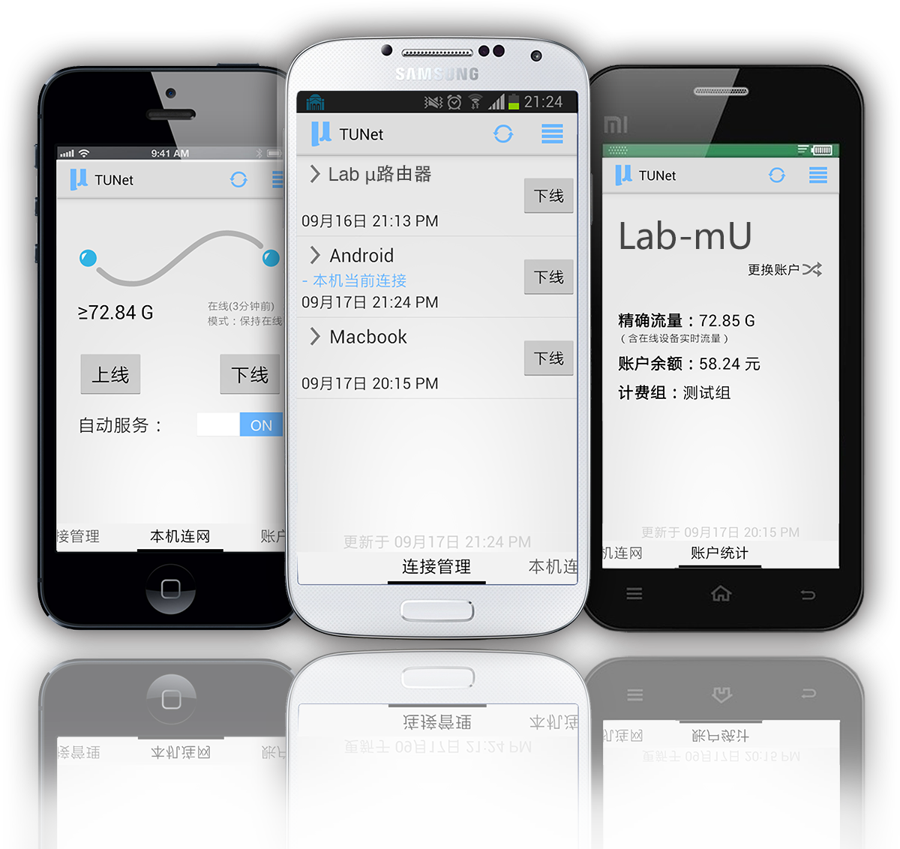

TUNet自动连网助手
立即下载
功能介绍
Lab μ (哞!实验室)
TUNet
支持自动连网的智能校园网客户端。
立即下载 Android 版本 »

独一无二的自动服务
打开自动服务后，程序将帮您：
自动登录认证，
拿出手机就能上网
；
智能断开过期的连接，
防止蹭流量
；
显示
通知栏图标
随时提示网络状态；
特殊情况下登录失败，会自动延时重试。
直观的连接管理
您可以为自己的电脑、手机、平板和
无线路由器
等设备进行命名；
只需一次
命名
，之后已命名设备在线时程序就会直接显示名称；
智能提示本机连接情况，支持共享路由器等复杂网络环境。
账户详情一目了然
为您提供更为
精确
的流量和账户余额信息；
计入当前在线设备的
实时
流量，避免下载爆表而不知情的杯具出现。